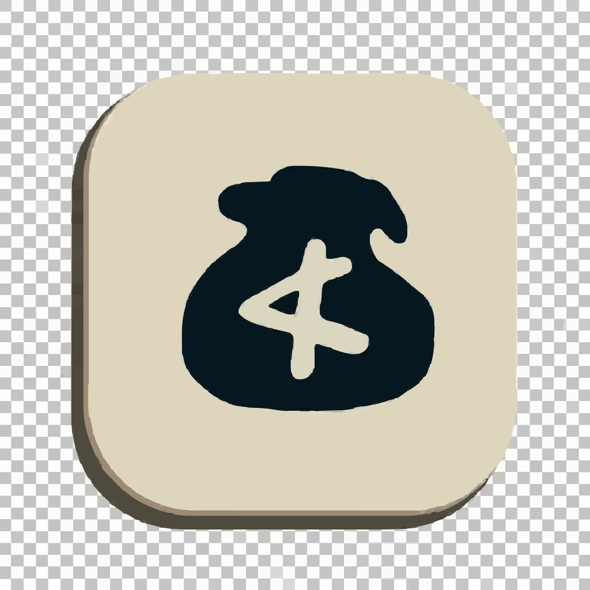

Customize the number of wares revealed and the base purchase limit for each player.
In solo mode, one additional Standard ware is revealed.
A player can purchase at most one Cursed ware, even when two are revealed.
Choosing Cursed Choices still grants 2 additional purchases.